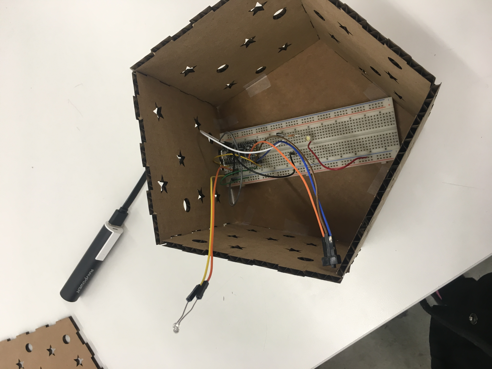
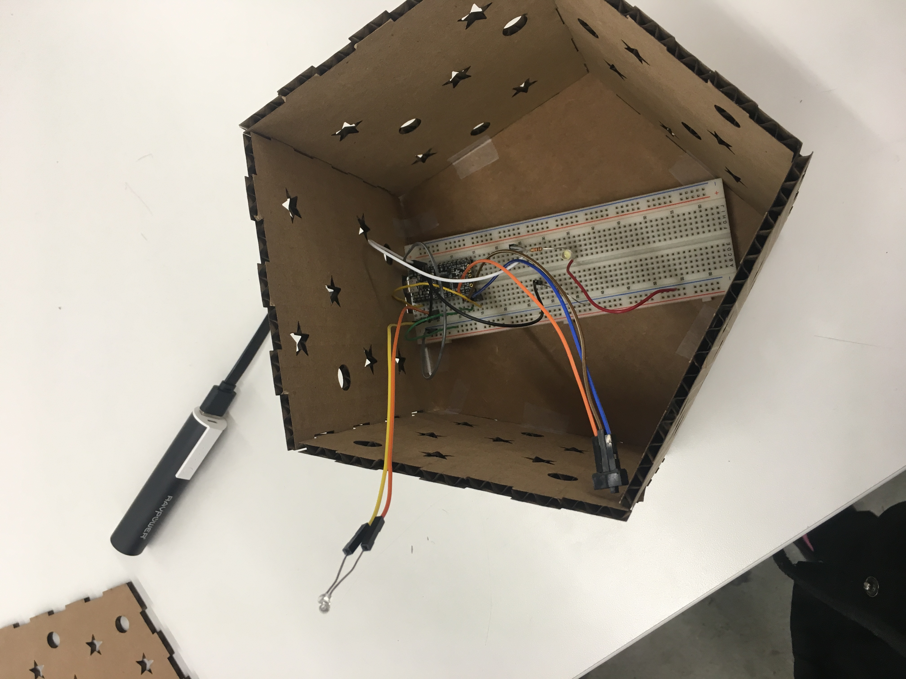

I was inspired by the galaxy night lights, but decided to make it sensitive to light so it responds to darkness.
The box was made using an online box generator. It is a polygon box with fingers to hold together big enough to hold a breadboard inside.
I was hoping to make the switch external to avoid having to open the lid, however this may be difficult since I will have to connect it to the breadboard indirectly. I am also trying to brainstorm
where to leave room for a port that does not affect the aesthetic, but I may just be able to put a battery inside the box to address this issue of powering the arduino.
Circle patterns were cut all around the box save for the bottom to give spaced lighting. In the future I may want to use a transistor so I can add more LEDs for more light.
This was my design on fusion that I then laser cut into cardboard.
This is the fully assembled piece.

I decided to make the phototransistor stick out of the box to avoid it being affected by the internal light produced by the LED.


I soldered the wires together and used heat-shrink, only to realize that it was a misplaced red LED and not a phototransistor. Leason learned: check first. That is why I decided to use F to M wires to attach the actual phototransistor even though it is less stable due to time constraints.
 

The Arduino was programed to react to light via the phototransistor and light an LED located inside of the box as the external area got darker. Download code soon to be implemented
/* AnalogReadSerial*/
/*https://forum.arduino.cc/index.php?topic=202115.0 */
/* https://www.tutorialspoint.com/arduino/arduino_connecting_switch.htm */
// the setup routine runs once when you press reset:
void setup() {
// initialize serial communication at 9600 bits per second:
pinMode(A0, INPUT); // phototransistor
Serial.begin(9600);
pinMode(13, OUTPUT); // LED
// initialize the switch as an input:
pinMode(2, INPUT); // Switch
}
// the loop routine runs over and over again forever:
void loop() {
// read the input on analog pin 0:
int sensorValue = analogRead(A0);
// print out the value you read:
Serial.println(sensorValue);
delay(100); // delay in between reads for stability
// read the state of the pushbutton value:
int switchState = digitalRead(2);
// check if the switch is on.
// if it is, the switchState is HIGH:
if (switchState == HIGH) {
// turn LED on:
if (sensorValue <= 100) {
digitalWrite(13, HIGH); //keeps led off in high light conditions
delay(50);
}
else {
digitalWrite(13,LOW); //above a certain threshold, it is just low
delay(50);
}
}
else {
// turn LED off:
digitalWrite(13, LOW); //if switch off, no light no matter what
}
}
The switch and the phototransistor were made external via F to M wires to allow for external control of the LED.

The switch, on pin 2, switches between ground and 3V to supply power. The phototransistor, on pin A0, uses a 10k Ohm resistor, connecting from 3V to ground. The LED uses a 100 Ohm resistor and connects from pin 13 to ground.
The end goal was to make a cute night light. (link to youtube video on photo below)